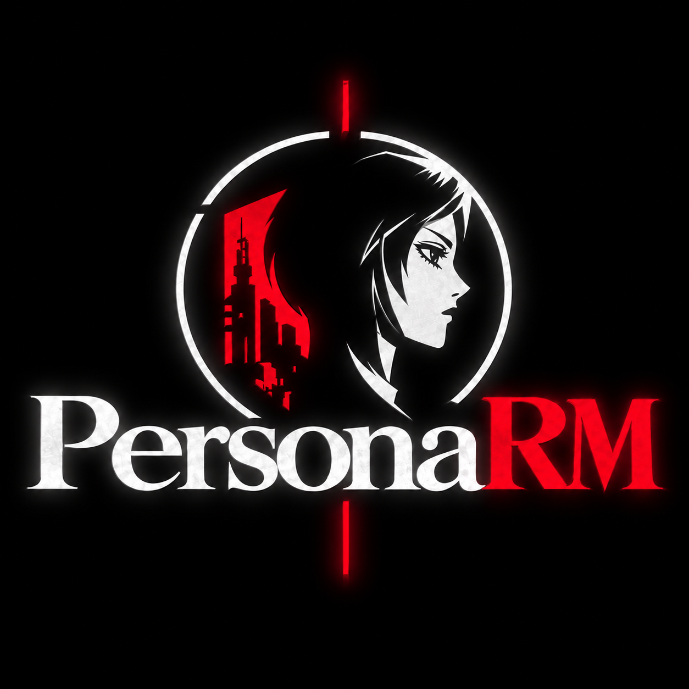

ゲームの内容は含みません
PersonaRM にはゲームのバイナリ、ROM、アセットは一切含まれません。ダウンロードするのはランタイムだけです。

PersonaRMネイティブ PC ランタイム · ペルソナ2 罰
PersonaRM は Windows と Linux 向けのオープンソースのランタイム兼ランチャーで、 現在開発中です。ゲームに必要な PlayStation 1 のハードウェアを再構築しています。 まだ完全にプレイできるわけではありませんが、ゲーム本来の実行ファイルはすでにイントロを再生し、 タイトル画面を表示し、ニューゲームでは操作キャラクターの自由移動とメインメニューまで 到達します(任意で SDL3 ウィンドウを使用。音楽と効果音も再生されます)。
PersonaRM にはゲームのバイナリ、ROM、アセットは一切含まれません。ダウンロードするのはランタイムだけです。
ご自身が所有するコピーのディスクイメージ(.cue/.bin、.iso、
.img)を PersonaRM に指定します。
ステートセーブ（F5 / F8、10 スロット）、キーを押している間の最大 16 倍の早送り、実験的なワイドスクリーンが使えます。コントローラーのボタン表示は今後対応します。
分岐およびロードのディレイスロットに対応した R3000A インタプリタです。ほかの部分を検証する際の基準になります。
GTE のベクトル・行列演算を 22 コマンドすべて実装済みです。実機の結果との照合はまだ行っていません。
1 MB の VRAM 上で動作するソフトウェアラスタライザです。ポリゴン、線、スプライト、CLUT テクスチャ、半透明に対応しています。
ゲームの 320×240 の STR ムービーを XA 音声とともにデコードします。タイミングの値は近似です。
ADPCM、ピッチ、エンベロープ、リバーブを備えた 24 ボイス。補間テーブルはまだ近似です。
ISO 9660 と生の CD-ROM XA イメージに対応し、.cue も解決します。ゲームのデータファイルをマッピングするツールも備えています。
4:3 に加え、実験的なワイドスクリーン(16:9、21:9)があります。予定:画面いっぱい(Fill)。
キーボードとゲームパッドはウィンドウで動作し、左スティックで十字キーを操作できます。予定:マウス、および PlayStation、Xbox、Nintendo のプロファイル。
標準の 128 KB カードファイルを --memcard1 と --memcard2 で指定できます。ディスク 1 のセーブと「CONTINUE」が動作し、ステートセーブでいつでもマシン全体を保存できます。
PersonaRM は開発中で、まだプレイはできません。計画は次のとおりです。 CPU の正しさを検証できる状態にし、マシンの中核を完成させ、ゲームを起動し、その後ゲームのコードを事前にコンパイルします。
現在のフェーズ:ユーザーの報告をもとに、ゲームをできるだけプレイしやすくする段階。 最初の公開版はリリース済みです(クイックスタートを参照)。 CPU とマシンの中核は完成しています。ステップ 3(初回起動)は、さらに先へ進めるために継続中です。ディスク 1 の日本版では、学校でのセーブから最初の戦闘に到達して勝利でき、その経路でエミュレーターのバグはありません。手動で数回の戦闘を行っても不具合は出ませんでした。軽量ランチャー(Rust + egui)はリリース済みで、これらの設定でゲームを起動し、GitHub Releases から自動更新されます。
ディスク 1 は音声付きでイントロを再生し、タイトル画面を表示し、ニューゲームでは自由移動とメインメニューまで到達します。
起動の挙動は、最初のオーバーレイのロードまで、リファレンスエミュレーターの PCSX-Redux と一致しています。
音楽と効果音が再生されるようになり、SPU はエミュレートされた時間(44,100 Hz)で動作します。リコンパイラはオーバーレイも対象になり、それぞれ RAM 上のコードのハッシュで検証され、上書きされた場合はインタプリタにフォールバックします。ディスク 1 では命令のほぼ 100% がネイティブコードとして実行され、トレースは自由移動までインタプリタと完全に一致したままです。デバイスのタイミングは遅延して進むようになり、結果は正確なまま、高速な PC でインタプリタは約 74 から 129 fps、再コンパイル版は約 100 から 370 fps に向上しました。メモリーカードは動作します。標準の 128 KB の .mcd ファイルを --memcard1 と --memcard2 で指定できます。ディスク 1 ではメインメニューからセーブでき、再起動後に「CONTINUE」でそのセーブを読み込めます。SDL3 ウィンドウは開発ビルドとして、--recomp(再コンパイル版)をメモリーカードと併用して実行できます。MOD: テクスチャのダンプと置換の最初のバージョンが SDL3 ウィンドウに入りました(--texture-dump と --mods、進捗表のモッドの行を参照)。ゲームのテキストシステムは特定済みです。会話はイベントバンク内のゲーム独自の 16 ビット文字コードで表現され、12x12 のフォントで描画されます。テキスト速度は本体の実行ファイル内の単一の設定です。テキスト速度オプションがあります: personarm_sdl --text-speed normal|fast|instant(または MOD のマニフェストの gameplay.text_speed)。ゲームに依存しない小さなゲームプレイパッチの仕組みの上に作られており、ゲームが特定のメモリワードを書き込むとパッチが適用され、期待されるバイト列で確認されます。会話の最初の行が表示されるまで、normal で 138 フレーム、fast で 48 フレーム、instant で 6 フレームです。現在はディスク 1 のみ対応です。ディスク 2(Sumaru TV Special Preview Disc)は起動して動作するようになりました。ATLUS と各局の映像、新聞形式のテレビ番組表を含むプロモーション用のテレビチャンネルディスクで、各番組はダイアログを含む短いゲーム内シーン(天気予報、バラエティ番組、Velvet Room のイゴールなど)です。インタプリタと再コンパイル版は完全に一致し、命令の約 99.99% がネイティブコードとして実行されます。米国版(SLUS-01158)は、英語のテキストで自由移動とメインメニューまで起動し、再コンパイル版はインタプリタと一致します。主なターゲットは引き続き日本版です。今後のランチャーでは、米国版のディスクを起動して英語を選べるようにする予定です。設定ファイル(settings.json、docs/SETTINGS.md を参照)では、ウィンドウモードと倍率、整数倍スケーリング、アスペクト比、垂直同期、fps の目標値、内部解像度、音量とミュート、キーとパッドの割り当て変更、セーブフォルダ、ゲームごとのオプション、フォーカス喪失時の一時停止を設定できます。コマンドラインのフラグはファイルの設定より優先されます。内部解像度(--resolution-scale 1-4)は、ソフトウェアラスタライザで 2 倍がリアルタイムに動作します。GPU レンダラー(--renderer gpu)は 1 から 9 倍まで動作し、フレーム補間とも併用できます。p2text ツールはフィールドの会話を抽出・再挿入します(docs/TRANSLATION_TOOLS.md)。ディスク 1 全体を往復変換して失敗は 0 件です。ファイル MOD(docs/MOD_FILES.md)と組み合わせると、編集した会話が実行中のゲームに表示されます(ディスク 1 の日本版、祠のシーンで確認)。翻訳はパッチとしてのみ配布し、ゲームのテキストそのものは配布しません。新機能: ディスク 1 の日本版でメニューのカーソルと UI ラベルが再び表示されるようになりました(GPU のリセットでビデオメモリが消えなくなりました)。左スティックで十字キーを操作でき、ボタン操作はログに記録されます。--record-input はプレイセッションを再生可能な入力スクリプトとして記録します(再生は同じ開始状態からバイト単位で一致します)。ワイドスクリーン(--widescreen 16:9 または 21:9)は実験的な機能です。GPU レンダラー(--renderer gpu)は 9 倍(4K)まで、または auto で動作します。ステートセーブ(F5 / F8)と早送りが使えます。p2text は翻訳した行が 288 px の会話ウィンドウからはみ出すと警告します。次は、ワイドスクリーンの改善、90 / 120 fps のよりなめらかなペース配分、ストーリーのさらなるプレイと確認です。
--texture-dump は VRAM にアップロードされた各テクスチャを PNG で保存(コンテンツのハッシュごとに 1 回)、--mods は mods/<名前>/textures/ の置換 PNG を描画(任意の manifest.json で優先度指定)。出力は元の解像度のまま、パレット違いは 1 つの PNG を共有、分割してアップロードされたテクスチャは分割ごとに 1 つの PNG。MOD にはモッダー自身の画像のみを含め、元のゲームファイルは含めないこと。ファイル MOD(files/Fnnnn.BIN):MOD が元のディスクのファイルを丸ごと置き換えると、実行中のゲームはディスクの代わりにそれを読み込みます。ファイルのサイズは大きくても構いません。personarm --boot と personarm_sdl の両方で --mods と併用でき、ディスク 1 の日本版と米国版で、インタプリタと再コンパイル版のどちらでも動作します。MOD が有効でない場合、出力はバイト単位で同一です。詳細は docs/MOD_FILES.md を参照--text-speed は normal、fast、instant を指定(または MOD のマニフェストの gameplay.text_speed)。ゲームに依存しない小さなゲームプレイパッチの仕組みの上に構築。最初の会話行が表示されるまで、normal で 138 フレーム、fast で 48 フレーム、instant で 6 フレームsettings.json)ユーザーごとの設定フォルダ、または --settings で指定。コマンドラインのフラグが優先。fps_target の 30、60、90、120 はすべて動作します。language は保存のみ--resolution-scale)ソフトウェアは 1 から 4、GPU は 1 から 9 または auto、または設定ファイルの video.resolution_scale。2 倍はソフトウェアラスタライザでリアルタイムに動作。GPU レンダラー(--renderer gpu)はフレーム補間とも併用可能p2text)フィールドの会話を抽出・再挿入。ディスク 1 全体を往復変換して失敗 0 件。ファイル MOD と組み合わせると、編集した会話が実行中のゲームに表示される(ディスク 1 の日本版、祠のシーンで確認)。翻訳はパッチとしてのみ配布。p2text は翻訳した行が 288 px の会話ウィンドウからはみ出すと警告します。米国版の文字幅はユーザーのディスクから読み取ります--renderer gpu)SDL_gpu(Windows では D3D12。他のプラットフォームはソフトウェアを使用)。読み戻しなしで直接表示します。1 フレームあたり 4 倍で約 8 ms、9 倍(4K)で約 11 ms、ソフトウェアでは 4 倍で約 37 ms。ラインとマスクは GPU で処理され、ワイドスクリーンとフレーム補間にも対応。1〜9 倍(4K まで)または auto。一部の機能はソフトウェアへのフォールバックか未実装です。詳細は docs/GPU_RENDERER.md--widescreen、video.widescreen)実験的な機能。--widescreen 16:9 または 21:9 で 3D 表示をより広くします。3D 上の会話、テキスト、肖像画は 4:3 のまま。メニューと FMV は 4:3 です。既知の問題: 部屋の端の空白が左右に見えます。スプライトのパーツが分離することがあり、テキストが揺れることがあり、フェードで最初に左右の端が見えることがあります。4:3 が推奨モードです。詳細は docs/WIDESCREEN.mdpersonarm_sdl --load-state N で起動時にスロット N を読み込めます。ステートは作成したビルドでのみ読み込めます(リリース間では互換性がありません)。メモリーカードのセーブは常に引き継がれます。Tab またはゲームパッドの R3 を押している間早送り。既定で最大 4 倍、上限 16 倍(video.fast_forward_max)--record-input)プレイセッションを再生可能な入力スクリプトとして記録します。再生は同じ開始状態から行えば、バイト単位で一致しますご自身が所有する「ペルソナ2 罰」(Persona 2: Eternal Punishment)のディスクが必要です。
GitHub Releases から最新の zip(v0.1.2)をダウンロードし、展開して launcher.exe を実行してください。
ランチャーで .cue ファイルを指定し(日本版と米国版(英語)のどちらでも可)、PLAY を押してください。
README の手順でソースからビルドし、フォルダーをスキャンしてイメージを検証します。
personarm --scan "/path/to/discs"
personarm --verify-disc "/path/to/disc1.cue"
personarm --portal
# 開発ビルド(-DPRM_WITH_SDL3=ON、再コンパイル済みコードはローカルで生成):
personarm_sdl "/path/to/disc1.cue" --recomp --memcard1 "/path/to/card1.mcd"設定は personarm_config.json に保存されます。SDL3 ウィンドウは settings.json も読み込みます(docs/SETTINGS.md を参照)。すべてのオプションは
personarm --help で確認できます。
中央のエンジンが、KUSEG、KSEG0、KSEG1 のバスを通じて、メモリを RAM、スクラッチパッド、GPU、 SPU、コントローラー SPI へ振り分けます。
ARCHITECTURE.md を読む →CMake 3.20 以上、C++17、Python 製のテストランナーを使います。継続的インテグレーションは Windows と Linux で動作します。
開発者ガイド →バグ報告、機能要望、プルリクエストを歓迎します。まずコントリビューター向けのルールをお読みください。
CONTRIBUTING.md →GPL v3 以降のライセンスで公開しています。フォークして、読み解き、改良してください。
リポジトリを見る →リポジトリをクローンしてビルドし、ご自身のディスクを用意してください。
GitHub で開く